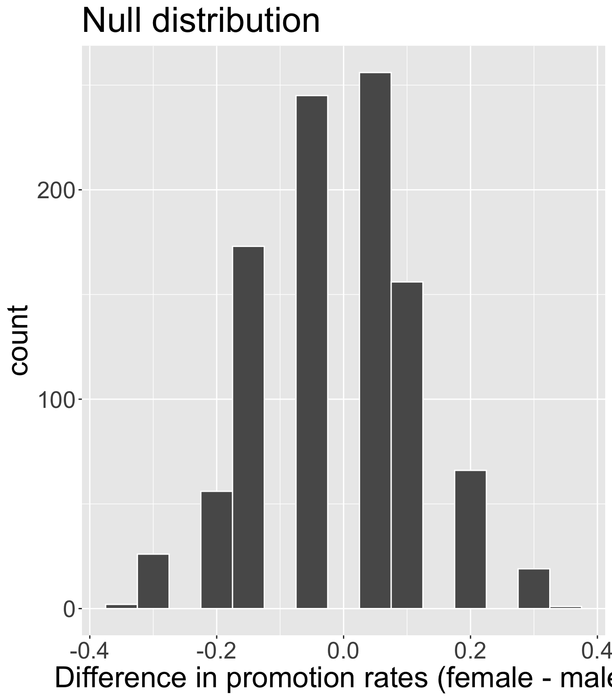
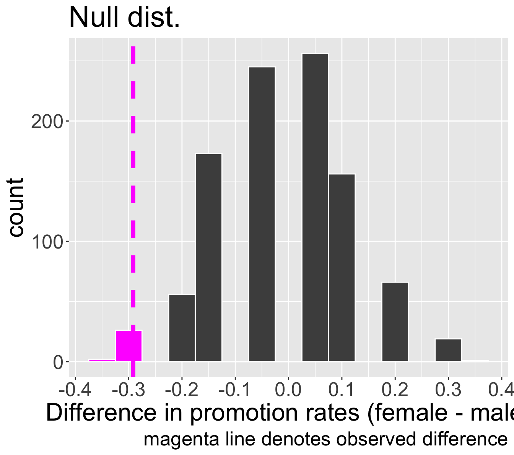
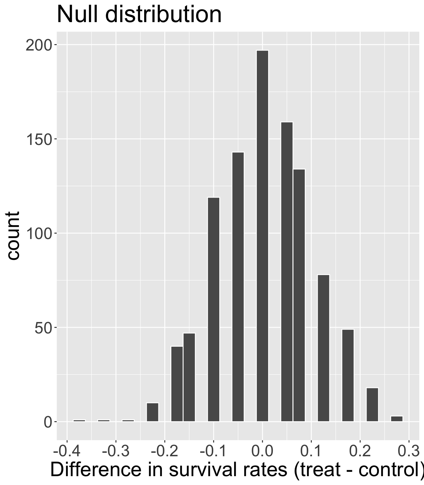
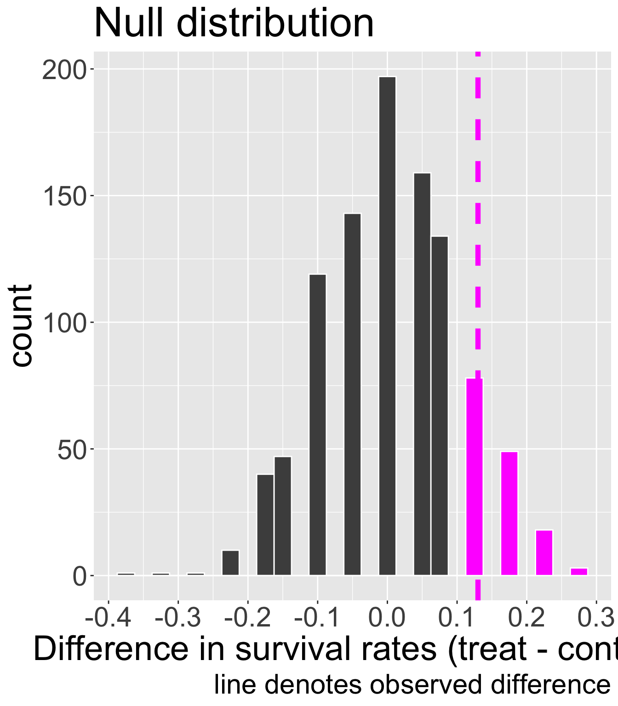

`summarise()` has grouped output by 'sex'. You can override using the `.groups`
argument.| sex | not promote | promote | total |
|---|---|---|---|
| female | 10 | 14 | 24 |
| male | 3 | 21 | 24 |
| total | 13 | 35 | 48 |
March 31, 2025
We will see another kinds of hypotheses for different types of research questions
Hypothesis testing framework is the same, but will change how we obtain null distribution
Try to see the big picture
Note: this study considered sex as binary “male” or “female”, and did not take into consideration gender identities
Participants in the study were 48 bank supervisors who identified as male and were attending a management institute at UNC in 1972
Each supervisor was asked to assume the role of personnel director of a bank
Each given a file to judge whether the person in the file should be promoted
The files were identical, except half of them indicated that the candidate was male, and the other half were indicated as female
Files were randomly assigned to bank managers
Experiment or observational study?
Research question: Are individuals who identify their sex as female discriminated against in promotion decisions made by their managers who identify as male?
Research question: Are individuals who identify their sex as female discriminated against in promotion decisions made by their managers who identify as male?
What is/are the variables(s) here? What types of variables are they?
We need to construct hypotheses where \(H_{0}\) is “status quo” and \(H_{A}\) is the claim researchers have
\(H_{0}\): the variables sex and decision are independent.
\(H_{A}\): the variables sex and decision are not independent, and equally-qualified female personnel are less likely to be promoted than male personnel
For each of the 48 supervisors, the following were recorded:
The sex of the candidate in the file (male/female)
The decision (promote/not promote)
`summarise()` has grouped output by 'sex'. You can override using the `.groups`
argument.| sex | not promote | promote | total |
|---|---|---|---|
| female | 10 | 14 | 24 |
| male | 3 | 21 | 24 |
| total | 13 | 35 | 48 |
Conditional probability of getting promoted by sex:
| sex | decision | cond_prob |
|---|---|---|
| female | promote | 0.583 |
| male | promote | 0.875 |
Is the observed difference \(\hat{p}_{f,obs} - \hat{p}_{m,obs} =\) -0.2916667 convincing evidence? We need to examine variability in the data, assuming \(H_{0}\) true.
Let’s set \(\alpha = 0.05\)
Simulating under \(H_{0}\) means operating in a hypothetical word where sex and decision are independent.
sex of the candidate should have no bearing on the decision to promote or notWe will perform a simulation called a randomization test:
Randomly pair up decision and sex outcome pairs
Randomly assigning a decision to each person would be equivalent to a world in which the bankers’ decision had been independent of candidate’s sex (i.e. if \(H_{0}\) true)
| sex | not promote | promote | total |
|---|---|---|---|
| female | 10 | 14 | 24 |
| male | 3 | 21 | 24 |
| total | 13 | 35 | 48 |
Write down “promote” on 35 cards and “not promote” on 13 cards. Repeat the following:
Thoroughly shuffle these 48 cards.
Deal out a stack of 24 cards to represent males, and the remaining 24 cards to represent females
Calculate the proportion of “promote” cards in each stack, \(\hat{p}_{f, sim}\) and \(\hat{p}_{m, sim}\)
Calculate and record the difference \(\hat{p}_{f,sim} - \hat{p}_{m,sim}\) (order of difference doesn’t matter so long as you are consistent)
Try it!
set.seed(100)
n <- nrow(discrimination)
n_f <- sum(discrimination$sex == "female")
n_m <- sum(discrimination$sex == "male")
decisions <- discrimination$decision
B <- 1000
diff_props_null <- rep(NA, B)
for(b in 1:B){
shuffled <- sample(decisions, n)
rand_f <- shuffled[1:n_f]
rand_m <- shuffled[-c(1:n_f)]
p_f_sim <- mean(rand_f == "promote")
p_m_sim <-mean(rand_m == "promote")
diff_props_null[b] <- p_f_sim - p_m_sim
}
Recall, the observed difference in our data was \(\hat{p}_{f,obs} - \hat{p}_{m,obs} =\) -0.2916667.
p-value is probability of observing data as or more extreme than our original data, given \(H_{0}\) true.
Where does “as or more extreme” correspond to on our plot?

Our research question: Are individuals who identify their sex as female discriminated against in promotion decisions made by their managers who identify as male?
sex and decision are independentsex and decision are not independent and equally-qualified female personnel are less likely to get promoted than male personnel by male supervisorsInterpret our p-value in context.
Make a decision and conclusion in response to the research question.
p-value interpretation: Assuming that sex and decision are independent, the probability of observing a difference in promotion rates as or more extreme as -0.2916667 is 0.028.
Decision: Because the observed p-value of 0.028 is less than our significant level 0.05, we reject \(H_{0}\).
Conclusion: The data provide strong evidence of sex discrimination against female candidates by the male supervisors.
What kind of error could we have made?
An experiment was conducted, consisting of two treatments on 90 patients who underwent CPR for a heart attack and subsequently went to the hospital. Each patient was randomly assigned to either:
For each patient, the outcome recorded was whether they survived for at least 24 hours.
What is/are the variables(s) here? What types of variables are they?
The researchers are interested in learning if the blood thinner treatment was effective for patients who undergo CPR after a heart attack?
\(H_{0}:\) the blood thinner treatment was not effective
\(H_{A}:\) the blood thinner treatment was effective
Try to write down the hypotheses using statistical notation.
Option 1
\(H_{0}\): \(p_{T} = p_{C}\)
\(H_{A}\): \(p_{T} > p_{C}\)
Option 2 (preferred)
\(H_{0}\): \(p_{T} - p_{C} = 0\)
\(H_{A}\): \(p_{T} - p_{C}> 0\)
Using the data, obtain the observed difference in sample proportions.
# A tibble: 3 × 2
group outcome
<fct> <fct>
1 treatment died
2 control died
3 control survived`summarise()` has grouped output by 'group'. You can override using the
`.groups` argument.| group | died | survived | total |
|---|---|---|---|
| control | 39 | 11 | 50 |
| treatment | 26 | 14 | 40 |
| total | 65 | 25 | 90 |
| group | died | survived | total |
|---|---|---|---|
| control | 39 | 11 | 50 |
| treatment | 26 | 14 | 40 |
| total | 65 | 25 | 90 |
\(\hat{p}_{C, obs} = \frac{11}{50} = 0.22\)
\(\hat{p}_{T,obs} = \frac{14}{40} = 0.35\)
Observed difference: \(\hat{p}_{T,obs} - \hat{p}_{C,obs} = 0.13\)
Is this “convincing evidence” that blood thinner usage after CPR is effective?
Set \(\alpha = 0.05\)
We will once again perform a randomization test to try and simulate the difference in proportions under \(H_{0}\)
Write down died on 65 cards, and survived on 25 cards. Then repeat several times:
Shuffle cards well
Deal out 50 to be Control group, and remaining 40 to be Treatment group
Calculate proportions of survival \(\hat{p}_{C, sim}\) and \(\hat{p}_{T, sim}\)
Obtain and record the simulated difference \(\hat{p}_{T, sim} - \hat{p}_{C, sim}\)
Live code or look here:
set.seed(310)
n_t <- sum(cpr$group == "treatment")
n_c <- sum(cpr$group == "control")
cards <- cpr$outcome
B <- 1000
diff_props_null <- rep(NA , B)
for(b in 1:B){
shuffled <- sample(cards)
treat_sim <- shuffled[1:n_t]
control_sim <- shuffled[-c(1:n_t)]
p_t_sim <- mean(treat_sim == "survived")
p_c_sim <- mean(control_sim == "survived")
diff_props_null[b] <- p_t_sim - p_c_sim
}Where should our null distribution be centered at?

How would we obtain the p-value in this problem?

We simulated 148 out of 1000 simulations where the difference in proportions under \(H_{0}\) was as or more extreme than our observed difference of 0.13
So p-value is approximately 0.148
The researchers are interested in learning if the blood thinner treatment was effective.
Our p-value is 0.148.
Decision: because our p-value of 0.148 is greater than \(\alpha = 0.05\), we fail to reject \(H_{0}\)
Conclusion: the data do not provide convincing evidence that the blood thinner treatment improves survival rates among patients who undergo CPR.
Possible error: Type 2
What were the similarities and differences between:
hypothesis test for independence
hypothesis test for two proportions
How do the randomization tests today differ from the test for one proportion that we learned last class?